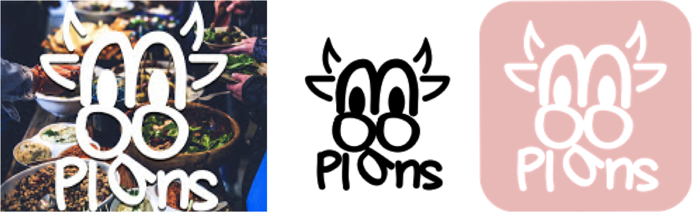

Moo-ve over Chartwells: Local Startup to Change Campus Dining Options
By Erin Rousseau
SOURCE: Moo Plans LLC
Moo Plans LLC, a meal service startup, is redefining the way Capital Region students and faculty think about on-campus dining.
The company began when Wesley Sherow, Moo Plans founder, decided to try his hand at entrepreneurship. "To expand your entrepreneur brain muscles you have to come up with ten ideas a day, and just don't stop doing that," Sherow laughed. This thought exercise morphed into a critical investigation of the problems plaguing the CNSE student population.
"[Moo Plans] got started because there was some sort of issue with CNSE Meal Plans that needed to be solved immediately." Sherow said, referring to the freshman students who were disgruntled by the lack of dining options. The initial semester dining plan for a CNSE freshman was 85 meals at the CNSE cafes with 350 dollars of declining balance to offset additional costs. Students were also able to utilize the CrestHill Suites' unlimited continental breakfast, though few did due to issues with scheduling and food options. Moreover, students at the University at Albany were dissatisfied with their on-campus meal plans. This complete dissatisfaction and lack of alternative on-campus dining options gave Sherow the idea to create a community sourced off-campus meal plan.
Moo Plans today operates on the premise of customizable crowd sourcing. A customer can select or build a meal plan that will get them local restaurant-quality meals as an alternative to internationally run on-campus food services. The meals can then be delivered by Moo Plans or eaten at the restaurant at a set time. Not only can Sherow see his plan being effective for students, but faculty as well. "We are not just limiting ourselves to underclassmen and upperclassmen, but we are also getting faculty and staff on board. That's actually what [the beta] is about. It's about seeing how faculty and staff react to having a meal plan for the month."
Sherow has big plans for Moo Plans in the coming future. "Expansion, that will be the big thing," Sherow remarked. After the beta testing at CNSE and the University at Albany, Moo Plans will officially launch in August. Following a successful release, Sherow hopes to expand Moo Plans to include the neighboring colleges within six months. Though Moo Plans looks towards a promising future, the company wasn't an overnight success.
Even for Sherow, getting a small business to be successful is no easy feat. "I think it is getting past the fact that you could fail and lose miserably...Unless you go 100% into a startup your chances of success are very low" he responded. Sherow, a CNSE senior, has decided to forgo the stability of graduate education or a traditional career in order to pursue his startup company. "I love it. My parents hate the fact that I'm telling them I have the options where I could get a really nice salary and just be stable my whole life, but I really want to take this risk."
Next up for Moo Plans are the Shark Tank Auditions in Miami after which, Sherow will present at 1 Million Cups in mid-March and Startup Tech Valley Business Plan Competition in April. Interested students should contact Moo Plans at thecows@mooplans.com or by visiting the website, mooplans.com.